짧은 스페인 여행기
게시: 2017-01-06T00:16:24+09:00
어제 돌아왔습니다. 제가 먹고 마시고 돈 쓰고 다녔다고 자랑하는 여행기를 재미있게 보실 분이 그리 많지는 않을 것 같아, 스페인 여행기를 최대한 짧게 정리해서 올립니다. 굳이 올리는 이유는 스페인 여행하실 분들 참고하시라는 것도 있고, 먼 훗날 저도 과거 회상할 때 필요할 것 같아서 그렇습니다.
저희 집의 브레인은 (다른 대부분의 집도 그러리라 믿습니다만) 와이프이고, 모든 계획은 와이프가 짰습니다.
12/24 마드리드 도착
12/25 세고비아(로마 수도교 있는 곳)으로 당일치기 버스 여행, 저녁에 마드리드로 귀환
12/26 마드리드에서 아침에 고속열차로 출발, 점심 경에 세비야 도착, 알카사르(Alcazar) 궁전 구경
12/27 세비야 대성당 구경, 에스파냐 광장(일명 김태희 광장) 구경
12/28 렌트카로 카디즈 출발, 점심 먹고 잠깐 구경 후 다시 론다로 출발, 저녁 경에 도착, 누에보 다리 구경
12/29 누에보 다리 다시 구경, 렌트카로 출발, 그라나다 도착, 렌트카 반납
12/30 그라나다 대성당 구경 후 알함브라 궁전 구경, 밤 비행기로 바르셀로나 도착
12/31 점심 경에 일어나 FC 바르셀로나의 홈구장 캄프누 구경, 이어서 카사 바트요 구경
1/1 유로자전거 나라 안내팀에 끼어 가우디 투어 (사그라다 파밀리아 성당과 구엘 공원 관람)
1/2 바르셀로나 근교의 몬세라트 수도원 당일치기 철도 여행, 저녁에 바르셀로나 귀환
1/3 바르셀로나 시내 구경 뒤 귀국행 비행기
전체 평을 하자면, 괜찮았습니다. 마드리드와 바르셀로나, 카디즈, 그리고 몬세라트는 다소 실망스러웠고, 나머지는 다 괜찮았습니다. 그 중에서도 세고비아와 세비야, 그라나다는 매우 좋았습니다. 그 중에서도 정말 멋졌던 3가지 순간을 꼽으라면 다음 3가지를 꼽겠습니다.
- 세고비아 로마 수도교 언덕에 올라 아래에 펼쳐진 평원과 수도교를 내려다보던 순간
- 세비야 알카사르 궁전의 "처녀들의 파티오"(Patio de las Doncellas)에 처음 들어서던 순간
- 그라나다 알함브라 궁전의 "포도주의 탑"(Torre del Vino) 꼭대기에 올라 저 멀리 네바다 산맥이 눈에 들어오던 순간
이번 여행에서 구경을 하면서 몇가지 느끼거나 배우게 된 점이 있습니다.
- 스페인 사람들이 아침 식사로 흔히 말하듯이 츄러스와 핫초코를 먹기도 하지만 실제로는 대부분 토스트와 커피를 먹는답니다.
- 마드리드나 바르셀로나의 대로변에는 제가 어릴 적 서울 달동네 뒷골목처럼 개똥이 많이 널브러져 있습니다.
- 스페인의 유명 쌀 요리인 빠에야는 먹을 만 하긴 합니다만, 매우 맛있다는 생각은 들지 않았습니다. 쌀 요리의 최고봉은 게살 볶음밥입니다.
- 식당에서 주문한 음식 나오기 전에 나오는 빵은 '안먹겠다'라고 거절하면 빼주는데, 그러지 않으면 빵 1개당 1유로(약 1260원)이 부과됩니다.
- 결국 스페인에서 볼 만한 것들은 대부분 아랍인들이 만들어 놓은 것이고, 스페인인들이 만들어 놓은 것은 제가 보기엔 그냥 그랬습니다.
- 스페인에서는 가로수로 오렌지 나무를 많이 심어 놓았는데, 이는 과일 열리는 나무를 좋아하는 아랍인들이 오렌지 향기를 좋아해서 스페인에 널리 퍼뜨린 것이라고 합니다.
- 스페인은 겨울에도 그리 춥지 않아서, 거리의 오렌지나무에는 잎사귀도 푸르고 오렌지도 주렁주렁 매달려 있습니다. 잔디도 파랗습니다.
- 반면, 여름에 스페인 여행은 안 하시는 것이 좋을 것 같습니다. 겨울에도 저런데, 여름에는 정말 사람이 튀겨질 것 같습니다.
이런 간단한 점들 외에, 별도로 정리하고 싶은 내용이 몇가지 있습니다. 이건 시간이 닿는 대로, 다음 4회에 걸쳐 짧게 정리하겠습니다.
1) 바르셀로나 사그라다 파밀리아의 새로 만들어진 '고난의 벽면'에서 본 빌라도의 조각
2) 세비야 에스파냐 광장의 벽면에서 본 마드리드, 히로나를 대표하는 타일 벽화
3) 알함브라 궁전에 얽힌 무함마드 12세의 눈물 이야기와 프랑스군 이야기
4) 카탈루냐의 독립 운동
나머지는 그냥 사진으로 때우겠습니다.
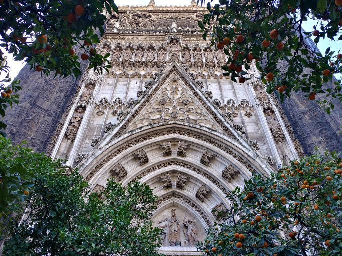
(세비야 대성당의 뒷마당에서 본 벽면입니다. 겨울인데도 오렌지가 주렁주렁...)
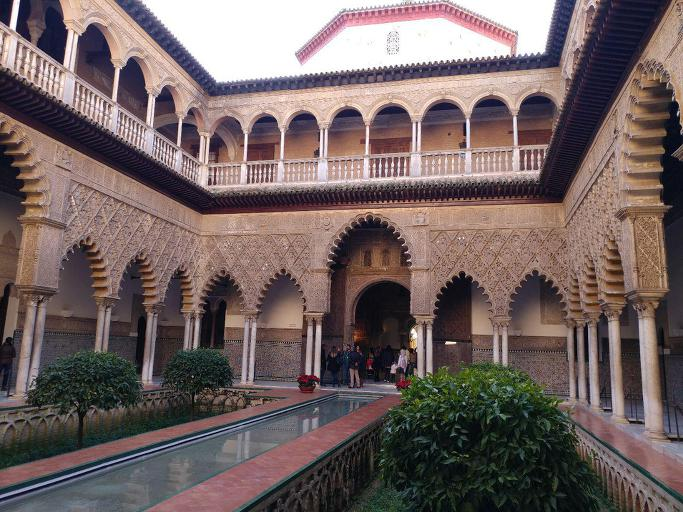
(세비야 알카사르 궁전의 '처녀들의 파티오'입니다. 이 궁전에서 올랜도 블룸 주연의 '킹덤오브헤븐' 영화 중 예루살렘 궁정 장면을 찍었답니다. 원래는 여기 바닥이 대리석으로 덮혀 있었는데, 나중에 역사학적으로 조사를 해보니 그건 나중에 바뀐 것이고 원래 알카사르의 바닥은 대리석이 아니었답니다. 그래서 원상 복구한답시고 대리석을 걷어냈는데, 리들리 스콧 감독이 영화 촬영을 위해 요청해서 결국 다시 대리석을 깔았답니다. )
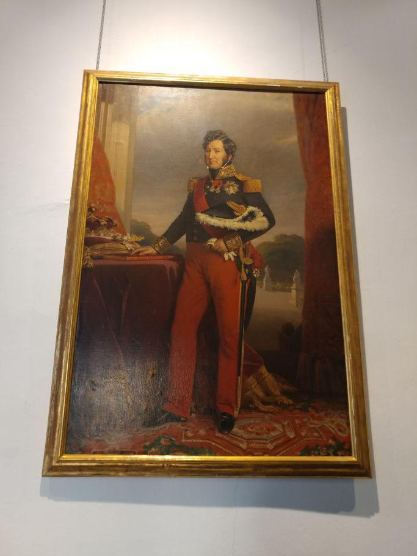
(알카사르 궁전 내의 '대사들의 방'에 걸린 초상화 중, 제가 알아볼만 한 얼굴이 2명 있더군요. 하나는 희대의 혼군 페르난도 7세이고, 그건 이상할 바가 없으나, 나머지 하나는 뜻 밖에도 사진에 보이는 프랑스 오를레앙 왕가의 왕 루이 필립입니다. 왜 이 사람이 스페인 왕궁에 사진이 걸려 있는지 의아했는데, 알고 보니 이 사람 아들과 스페인 이사벨라 2세의 여동생이 결혼을 한 인연이 있어서 그런 모양입니다. 나중에 비교해보니 프랑스에 있는 루이 필립의 잘 알려진 초상화와는 자세나 배경 등이 약간 다릅니다.)
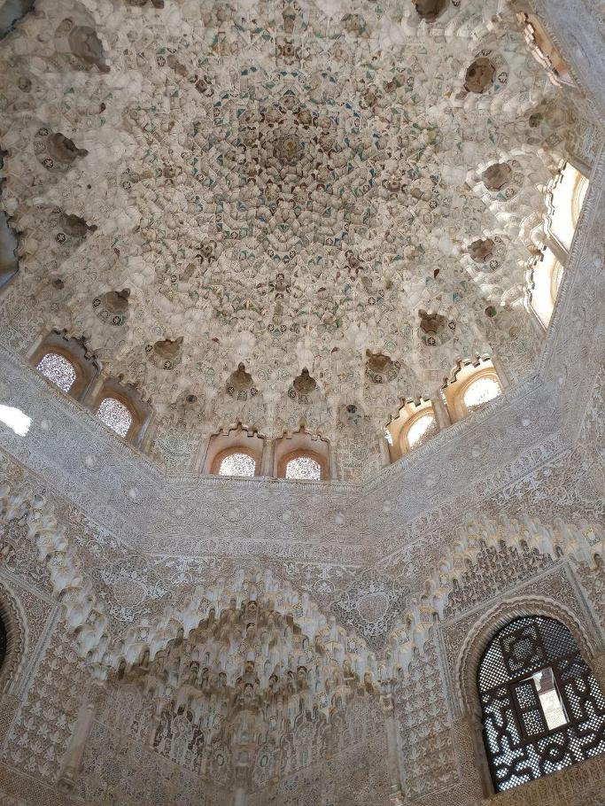
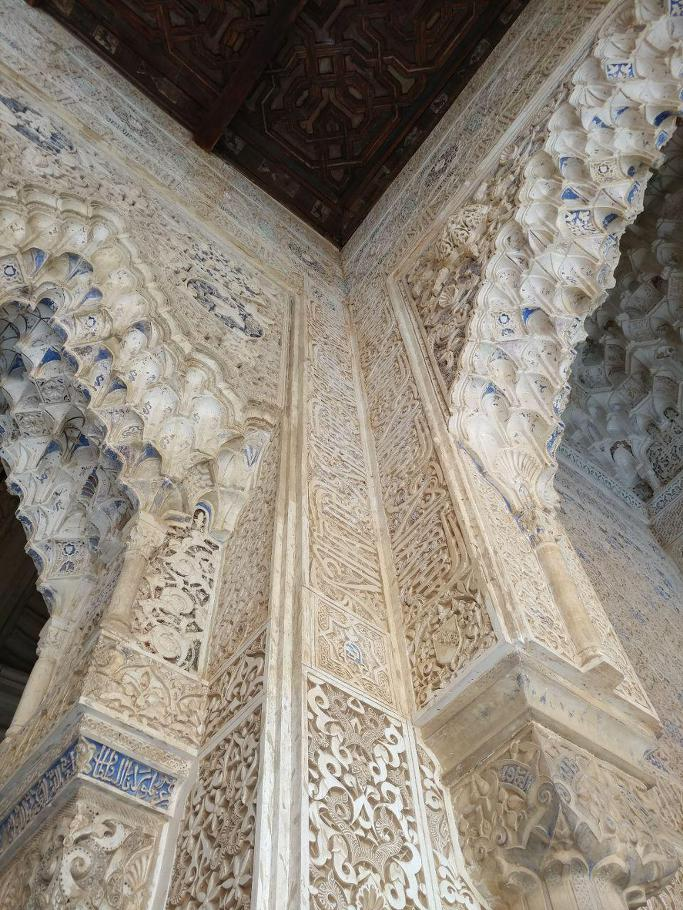
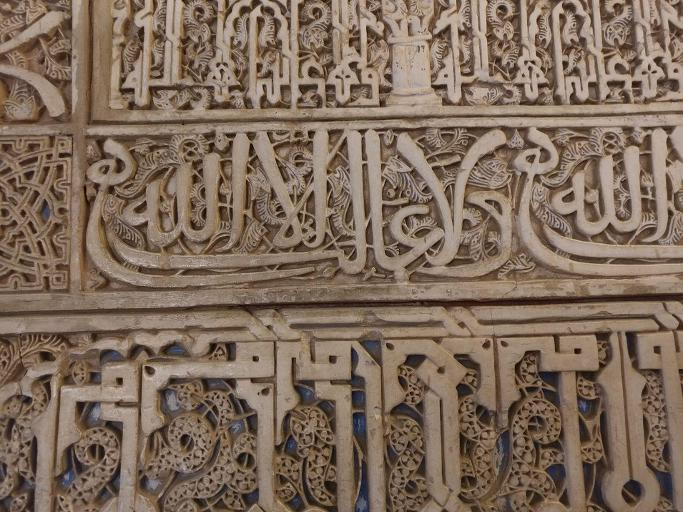
(알함브라 내의 나스르 궁전의 아름다운 천정과 벽면 장식입니다. 정말 감탄이 나왔습니다.)
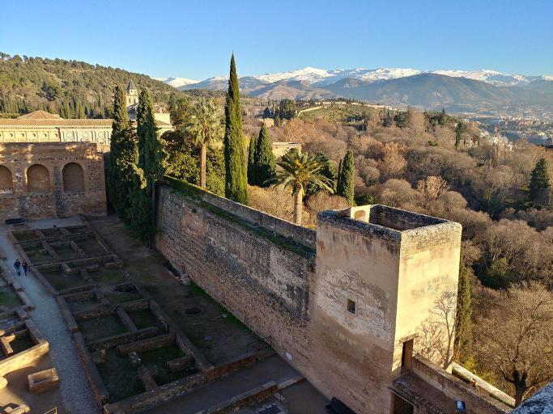
(알함브라 궁전의 일부인, 알카사바 요새의 한 건물인 토레 데 비노(Torre de vino), 즉 포도주의 탑에 바라본 네바다 산맥(Sierra Nevada)입니다. 저는 미국 말고 스페인에도 네바다 산맥이 있는 줄 여기서 처음 알았습니다.)
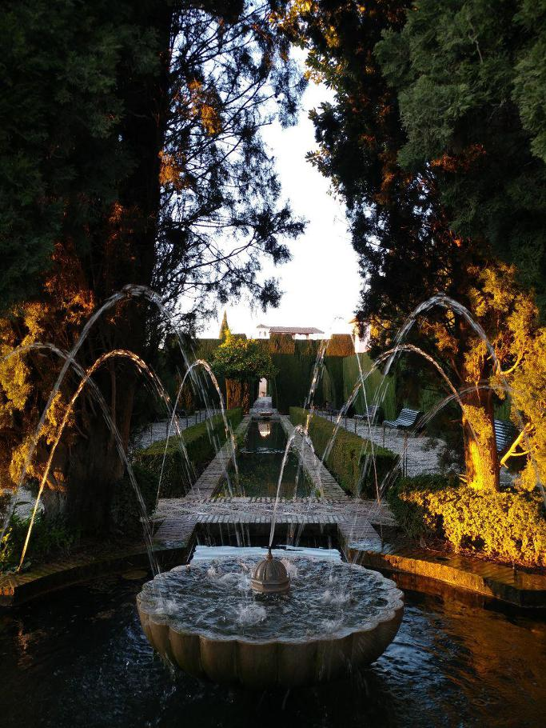
(알함브라 궁전의 정원인, 헤네랄리페(Generalife) 중 일부입니다. 저는 제네럴 라이프를 그냥 스페인식으로 읽은 것인가 싶었는데, 그건 아니고 원래 아랍어로 '건축가의 정원'이라는 뜻이라는군요.)
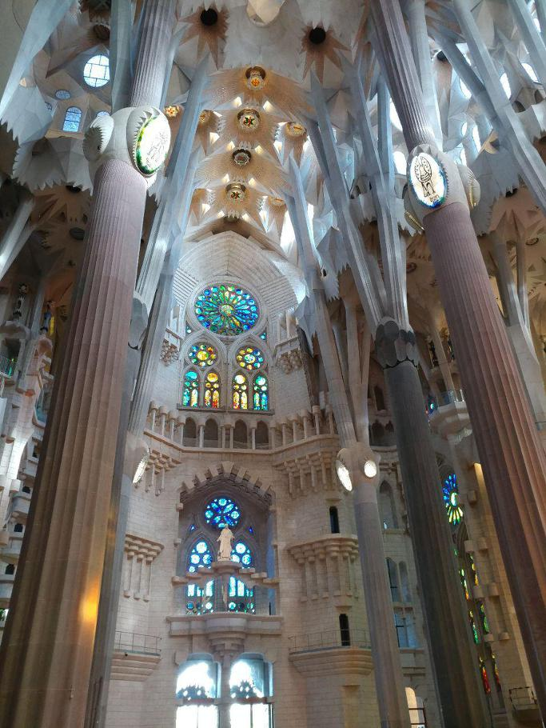
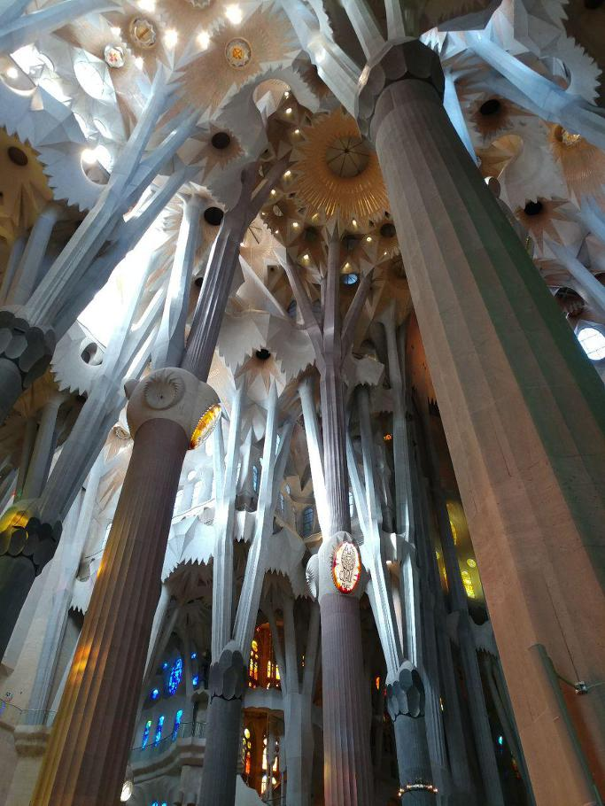
(바르셀로나 사그라다 파밀리아 성당의 내부입니다. 저는 가우디 가우디 하면서 떠받느는 것을 잘 이해를 못 합니다만, 이 건물은 정말 멋있다고 생각합니다. 이 건물에 대한 혹평도 많더군요.)
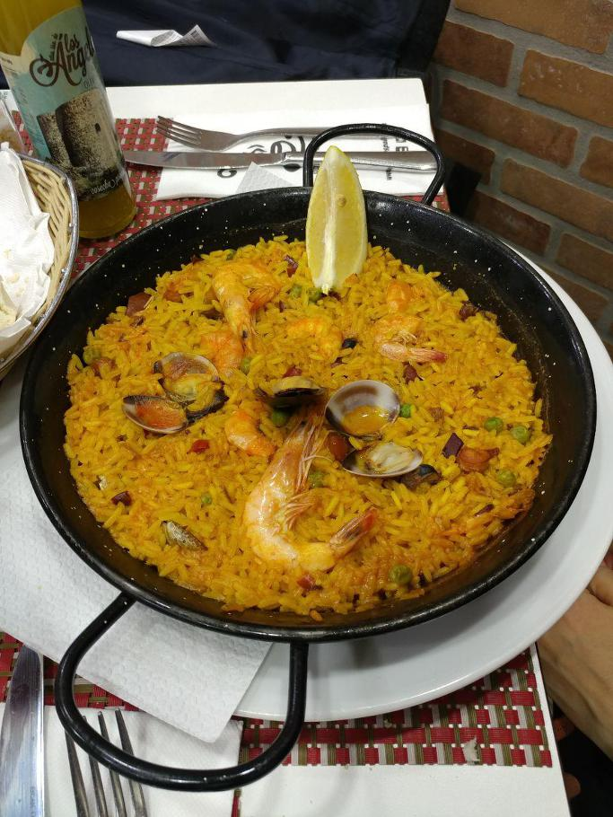
(빠에야 Paella 입니다. 이탈리아 리조또와는 달리 끈기가 없는 길쭉한 쌀로 만듭니다. 너무 짜다는 말을 많이 들어서, '소금은 조금만'이라는 스페인어도 배워갔습니다만, 의외로 그런 말 안 해도 별로 안 짜던데요 ?)
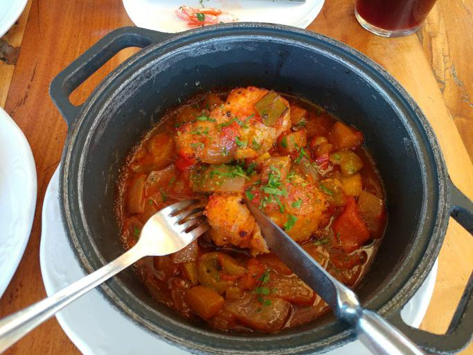
(명성이 자자한 염장 대구 바칼라오 bacalao 요리입니다. 그런데 먹어보니 의외로 역시 안 짜고 부드러운 것이... 그냥 생대구로 만든 것처럼 느껴지던데요 ? 우리 가족이 평소에 짜게 먹는 것일까요 ? 맛있었습니다만 가격은 18유로가 넘어서... 비쌌습니다.)
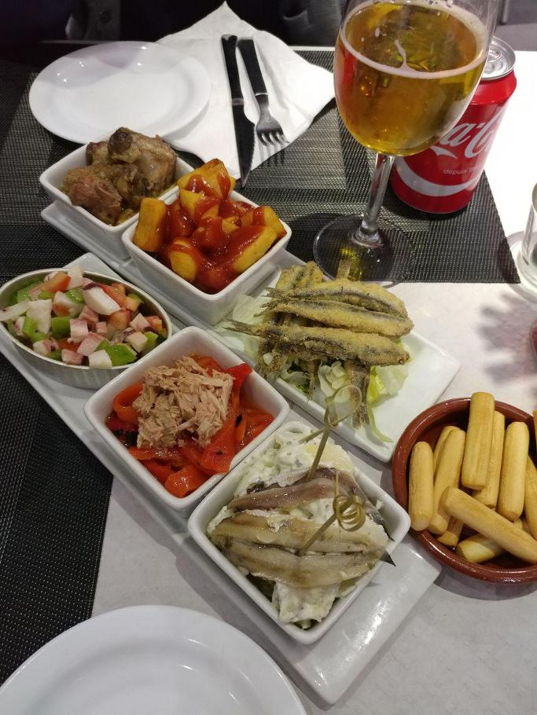
(스페인이 자랑하는 술안주 요리, 타파스입니다. Tapa라는 것은 원래 와인잔이나 맥주잔에 먼지를 막기 위해 씌워두던 작은 접시를 뜻하는데, 거기에 안주를 조금 얹어 팔았던 것에서 타파스 요리가 발달했다고 합니다. 맨 아래쪽의 생선 같은 것은 소금에 절인 생 앤초비인데, 의외로 비린내도 별로 없고 괜찮았습니다. 비린내는 우리나라 멸치볶음 정도였어요.)
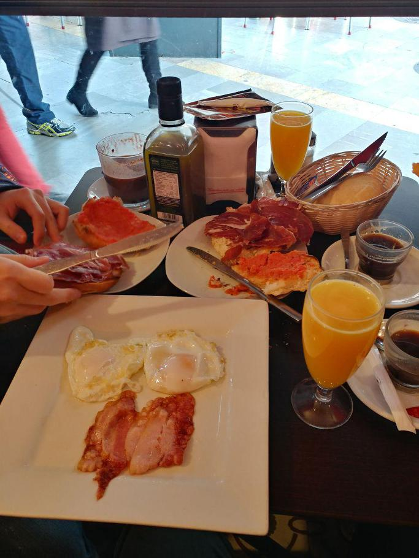
(이건 나름 호화롭게 먹은 아침식사였습니다. 저 빵위에 발린 주황색 페이스트는... 뭔가 토마토로 만든 것 같기는 한데 아직도 정확한 정체를 모르겠습니다. 오른쪽 빵 위에 얹힌 것은 유명한 스페인의 생 햄인 하몽입니다.)
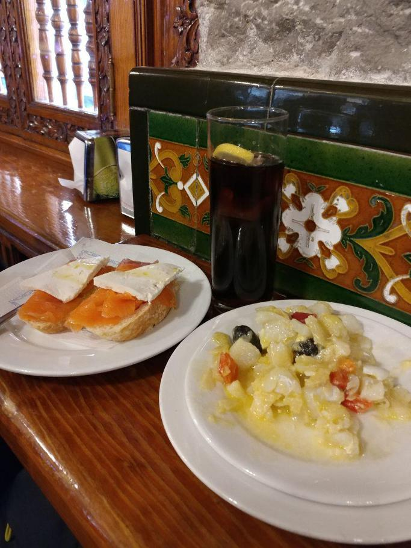
(그라나다의 라만차라는 바에서 점심 대신 먹은 타파스 요리입니다. 오른쪽 요리는 염장 대구를 익히지 않고 삶은 감자, 양파와 함께 내놓은 것인데, 비린내 전혀 없이 꽤 맛있었습니다.)
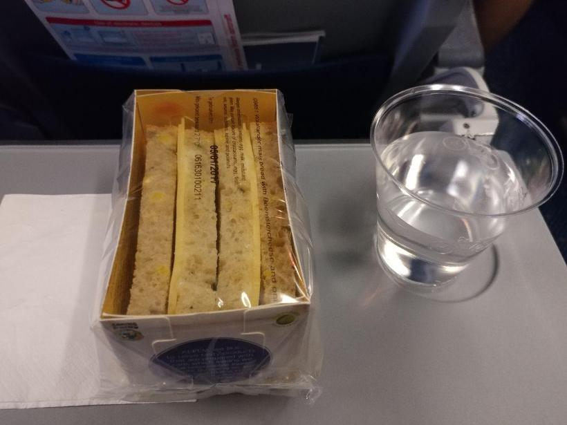
(이 우울한 기내식은 바르셀로나에서 암스테르담으로 환승해서 돌아올 때 KLM 항공에서 준 저녁 식사입니다. 저는 제가 고려항공 탄 줄 알았습니다. 그런데 또 의외로 맛은 나쁘지 않았습니다.)